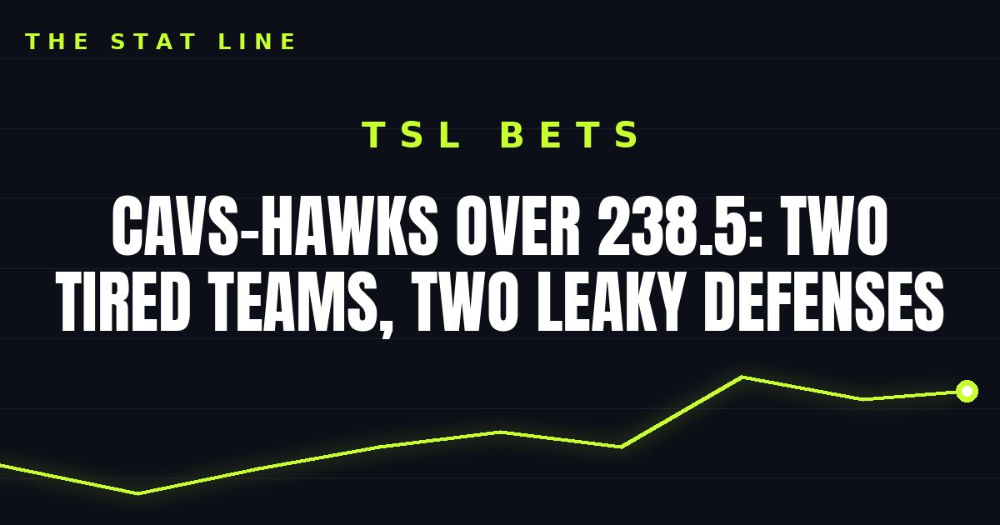

Cavs-Hawks Over 238.5: Two Tired Teams, Two Leaky Defenses
Cleveland at Atlanta on the second night of a back-to-back for both teams, with a total built for a shootout. The points are the play.

Game slip: Cleveland Cavaliers at Atlanta Hawks
• Matchup: Cleveland Cavaliers (3-1) at Atlanta Hawks (2-3)
• Time/channel: Thursday, 8:00 p.m. ET, NBA TV, from State Farm Arena in Atlanta
• Odds (FanDuel): Hawks -1.5; total 238.5
• Injury report: Hawks — Mouhamed Gueye out (foot surgery over the summer), Henri Veesaar out for the season. Cavaliers — Nae'Qwan Tomlin out (lower back stress reaction, 3-4 weeks). No fresh flags on either team's core scorers.
• Storylines: (1) Both teams are on the second night of a back-to-back — Cleveland won 121-111 at Washington on Wednesday, Atlanta lost 129-117 to Miami. (2) Atlanta's last two games averaged 240.5 combined points, and the Hawks are scoring 121 a night. (3) Atlanta has lost three straight since its opening-night win; Cleveland has won three straight.
The bet: Over 238.5
Two tired teams, two leaky defenses, and a total built for a shootout. Atlanta is scoring at will and giving it right back, Cleveland is rolling, and neither team is at full defensive strength on a back-to-back. This is a pace-and-points play, not a feel-good one.
The honest caveat: second nights of back-to-backs can also produce dead legs and bricked jumpers — this needs both offenses to show up, not just one. If one team mails it in, the total is in trouble. But the recent scoring trends on both sides say shootout more than slog.
If gambling stops being fun, call 1-800-GAMBLER.
Sources: FanDuel — Hawks vs. Cavaliers